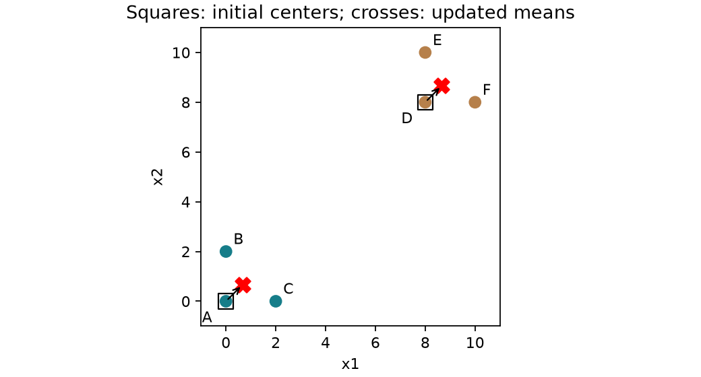
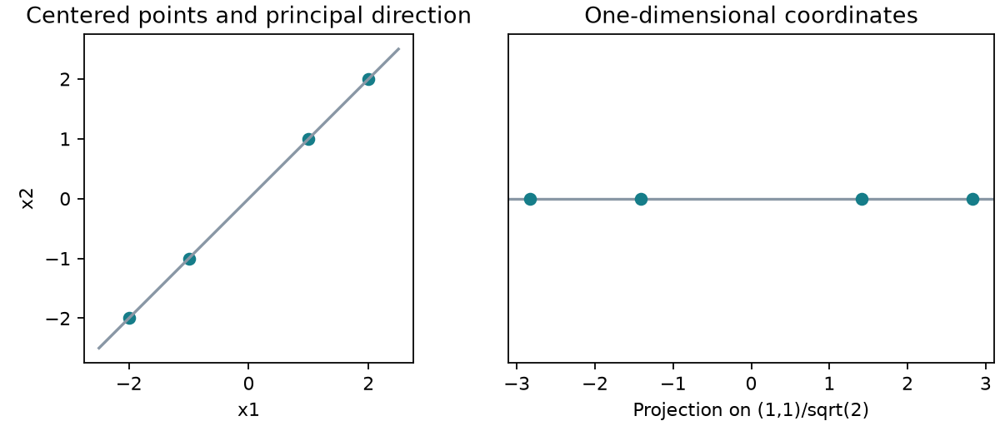

K-means 与 PCA
T12 · 机器学习 · 共同理论 · 2 学时
同一批记录，可以提出不同的学习任务
以批次的计划负荷比例和环境指数为输入：
- 预测完工总能耗：连续目标，回归。
- 预测是否超限：预先定义的类别目标，分类。
- 不提供目标，按特征相近程度分组：聚类。
- 不提供目标，用更少坐标保留主要变化：PCA。
学习依据决定结果能够说明什么
| 回归 |
用 学数值预测关系 |
数值预测 |
| 分类 |
用 学类别预测关系 |
类别或概率 |
| 聚类 |
K-means 只用 优化距离目标 |
分组、中心和簇编号 |
| 降维 |
PCA 只用 选择高方差投影 |
新方向和投影坐标 |
簇编号不是已有类别，投影坐标也不是预测结果；“没有目标标签”不等于“没有从数据学习规则”。
K-means 交替完成分配与更新
中心可以落在点与点之间，不必对应某条真实记录。
目标是簇内平方欧氏距离和
点 属于簇 ，第 个中心为 ：
- 中心固定：每个点选最近中心，使自己的那一项最小。
- 分组固定：各坐标取组内均值，使该簇平方距离和最小。
- 标准非空簇步骤中，交替更新使 不增。
纸笔 A：六个点完成一次更新
约 8 分钟 · · 初始中心 与
A、B、C、D、E、F。
- 将六点分给欧氏距离最近的中心。
- 固定分组，用坐标均值更新两个中心。
- 给定更新前 ，计算更新后的 。
核对一：六点到两个初始中心
| A |
0 |
128 |
1 |
| B |
4 |
100 |
1 |
| C |
4 |
100 |
1 |
| D |
128 |
0 |
2 |
| E |
164 |
4 |
2 |
| F |
164 |
4 |
2 |
当前 。
核对二：由当前分组更新中心

方框为初始中心，红色叉号为更新后的组内均值。
核对三：计算更新后的距离目标
第一簇到新中心的距离平方：
第二簇整体平移，合计也为 ，所以
本例再次分配不变；一般数据可能需要多轮。
纸笔 B：更小的 J 说明了什么？
- 交换簇 1、簇 2 的编号，成员关系改变了吗？
- 下降能否证明分组对应真实产品类别？
- 为什么不能不断增加 K，只追求更小的 ？
- 单独放大一个坐标，可能改变什么？
核对：J 能支持哪些结论？
- 交换簇编号不改变成员分区。
- 不含真实类别资料，下降只说明中心更贴近当前成员。
- 每个点独占一簇时 ，却没有把对象归纳成更少的组。
- 初始化、K 和尺度都会影响最终结果。
若比较每个 K 可达到的最小 ，增加中心数不会使它变大；一次具体运行仍受初始化影响。
PCA 把点沿一个方向重新记坐标
一批点若大致沿斜线排列，可以用它们在斜线方向上的位置描述主要差异。
纸笔 C：沿对角线投影
约 6 分钟 · 四点均值为
四点：、、、。
- 点 沿 的投影是多少？
- 沿垂直方向 的投影是多少？
- 为什么本例降到一维没有丢失非零方差？
核对：两个方向的投影方差
沿 的坐标：
均值为 0，平方的平均值为
垂直方向四个投影均为 0，方差也为 0。
第一主成分选择投影方差最大的方向

- 本例四点恰好共线，一维保留全部非零方差。
- 一般点云在垂直方向仍有变化，降维会丢失信息。
- 保留更多主成分时，后续方向与已有方向垂直。
高方差不等于对预测最有用
假设产品尺寸变化很大，缺陷却主要由变化较小的质量信号区分：
- PCA 没有读取缺陷标签，不能按分类价值选方向。
- 输入单位会影响方差；中心化不会自动统一量级。
- 高解释方差不能证明类别、因果或业务重要性。
是否先标准化，要根据特征单位和希望保留的差异决定。
描述一批数据与评价预测，是两种用途
| 描述明确的一批无标签探索数据 |
这批探索数据 |
| 作为预测流程的预处理 |
当前训练部分 |
| 检查训练外预测 |
验证部分只 transform |
同批数据上的结构图不能被宣称为训练外预测证据。
纸笔 D：没看标签，就一定没有泄漏吗？
约 6 分钟 · 全体 fit 填补/标准化 → 再做三折
有人解释：
“预处理没有使用标签，所以没有泄漏；只要修复后分数没下降，原流程就没有问题。”
指出两处错误，并写出正确的 fit/transform 顺序。若加入 PCA，它应在哪部分拟合？
核对：预处理统计量来自哪些行？
错误流程：
120 行一起 fit 填补与尺度 → 再分三折训练 KNN
正确流程：
每折 80 行训练 fit 填补、尺度、PCA 与模型 → 40 行验证只 transform、预测、评价
即使没有使用验证标签，验证特征仍可能改变中位数、均值、方差或投影方向。
三折结果与统计量来源
| 全体预处理后再分折（无效） |
0.625 |
0.700 |
0.750 |
0.6917 |
| 每折训练部分拟合（有效） |
0.625 |
0.700 |
0.750 |
0.6917 |
两行分数相同，统计量来源仍然不同；前一行不能作为独立验证证据。
判断依据是当前验证对象能否改变用于预测它的已拟合规则。
教师演示：验证值怎样进入“训练中心”？
默认验证值 10：训练均值为 4，全体均值为 6；训练值 6 从“高于中心 2”变成“位于中心”。只改验证值时，正确训练均值仍为 4，全体均值会跟着变。
B06：修复流程，再在原协议下比较
- 先定位全体拟合怎样使用了折内验证特征。
- 用 Pipeline 让每折训练部分拟合填补、尺度与 KNN。
- 按本人 Notebook 的既定任务核对短探索。
- 原项目沿用 B05 的划分和主指标，只比较一个事前确定的候选。
- 候选未改善也保留依据和结果，不读取保留测试。
小结：无标签方法仍在学习数据规则
- K-means 用中心和平方欧氏距离形成分组。
- 中心更新降低当前距离目标，不证明真实类别。
- PCA 用高方差方向压缩坐标，降维会有取舍。
- 无标签方法不自动保留预测相关信息或证明因果。
- 作为预测流程时，变换仍只能在训练范围拟合。
离堂检查：分别说明能做什么、不能断言什么
约 5 分钟 · 独立完成 · 姓名________
- K-means 的簇编号能否直接当作真实类别？
- PCA 保留最大方差，能否保证分类更准？
- 没使用验证标签，能否保证没有泄漏？
每题写出判断和依据；答案在教师材料中核对。